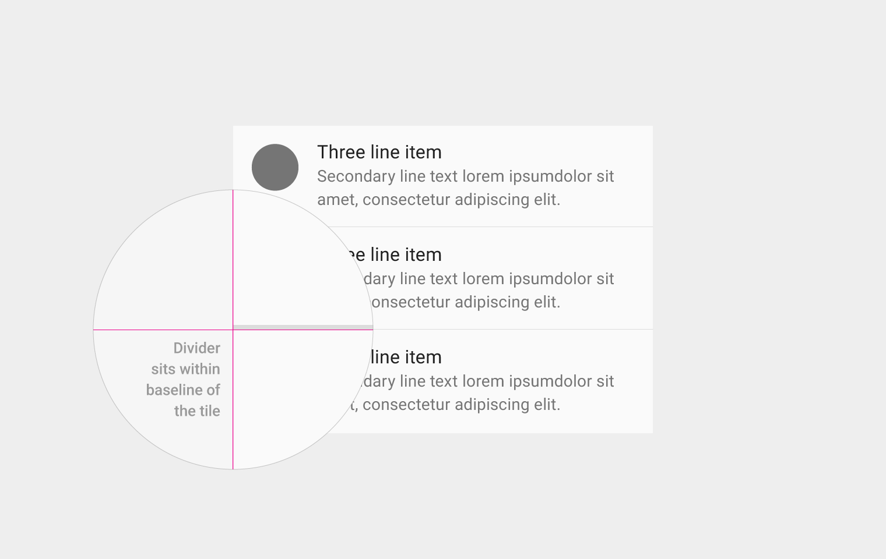

Specs
Dividers are 1dp thick, with an opacity of either 12% black in light themes or 12% white in dark themes.
Dividers are placed along the bottom edge of the content tiles, independent of the grid.

Dividers group and separate content within lists and page layouts. The divider is a thin rule, lightweight yet sufficient to distinguish content visually and spatially.
Dividers help users understand how content is organized by establishing a rhythm and hierarchy on a page. But a heavy use of dividers can lead to visual noise and dilute their impact.
Full-bleed dividers emphasize separate content areas and sections, but if such strong divisions are not required, consider using white space, subheaders, or inset dividers.
Items without anchors
When lists don’t have an anchoring element such as an avatar or icon, spacing alone isn’t always enough to separate tiles. In this case, full-bleed dividers can help create rhythm and separate individual tiles.
Image-based content
Because the grid itself creates visual distinction, grid lists do not need dividers to separate subheaders from content. In this case, the white space and the subheaders separate the sections adequately.
Judicious use of inset dividers helps demarcate major sections of content.
Overuse of full-bleed dividers creates visual noise and ultimately diminishes the meaning of the dividers.
Inset dividers help cut down on visual noise and should be used with anchor elements, but overuse reduces their meaning.
Full-bleed dividers separate distinct content sections (e.g., biographic details from contact information) or distinct content elements (e.g., list items) in both lists and page layouts.
Full-bleed dividers can also indicate seams in material where the material will expand when content is expanded.
Inset dividers subdivide related content, such as phone numbers from email addresses from street addresses in a contact detail.
Inset dividers should be used in conjunction with anchoring elements such as icons or avatars aligned with the Title Key Line.
When using a divider with a subheader, place the divider above the subheader to reinforce the relationship between the subheader and the content.
Dividers are 1dp thick, with an opacity of either 12% black in light themes or 12% white in dark themes.
Dividers are placed along the bottom edge of the content tiles, independent of the grid.
Sun Junwen | Casper Zhang.